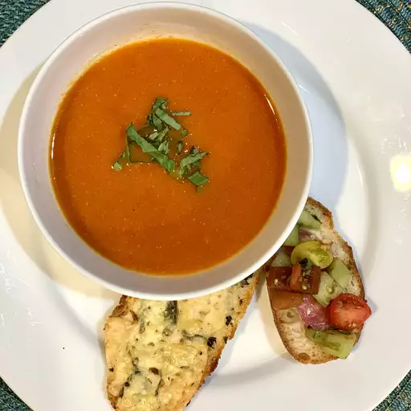

Tomato Soup

Description
Tomato soup is a soup made with tomatoes as the primary ingredient. It may be served hot or cold in a bowl, and may be made in a variety of ways. It may be smooth in texture, and there are also recipes which include chunks of tomato, cream, chicken or vegetable stock, vermicelli, chunks of other vegetables and meatballs.
- 3 ½ pounds vine-ripened tomatoes
- 4 tablespoons unsalted butter
- 2 tablespoons olive oil
- 2 cloves garlic, minced
- 1 anchovy fillet
- 1 teaspoon salt, or to taste
- 1 pinch red pepper flakes (Optional)
Steps
- Prepare the tomato soup: Remove cores from tomatoes and cut in half crosswise. Reserve until needed.
- Heat butter and olive oil in a saucepan over medium-high heat. Add garlic and anchovy and cook until garlic is sizzling in the hot fat, 45 seconds to 1 minute. Carefully add tomatoes with their juices, salt, and red pepper flakes. Toss with a spoon every few minutes until tomatoes release their liquid and start to break down.
- Once tomatoes have softened and started to collapse, reduce heat to medium-low and cook, stirring occasionally, until tomatoes have fallen apart and the soup resembles a coarse tomato sauce, about 45 minutes.
- Remove soup from heat and pass through a mesh strainer into a bowl. Use the back of a ladle to push all the tomato mixture through. Discard the skins and seeds, which should be the only things left in the strainer.
- Transfer the strained tomato soup back into the saucepan and place back over medium-low heat. Continue cooking to thicken slightly, if desired, or simply bring back to a simmer and serve immediately with the cheese toasts.